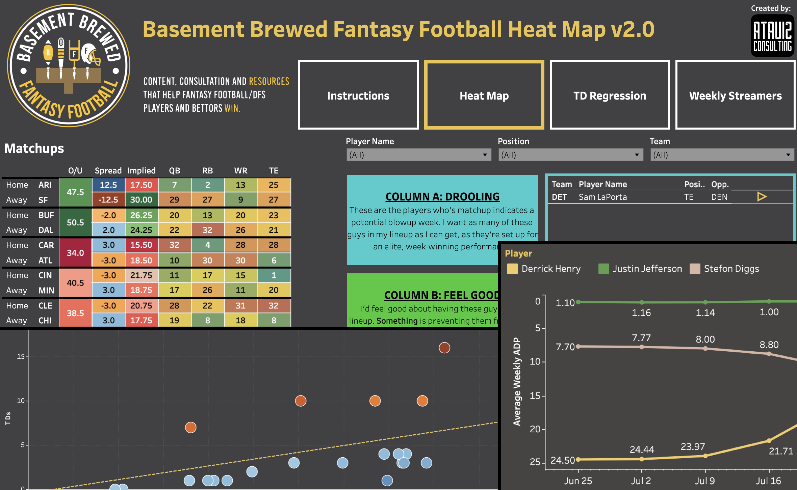

Revolutionizing Real Estate Insights for Maverick Systems Through Custom Analytics
In a transformative collaboration, Maverick Systems partnered with Ataviz Consulting to harness the power of data analytics in revolutionizing the real estate industry. Ataviz Consulting curated two customized datasets, one focused on real estate agents and the other on brokerages, leveraging APIs to aggregate data from diverse MLS systems. This case study delves into the goals, tools, and remarkable results achieved through the creation of these extensive datasets, showcasing how Maverick Systems is now equipped to provide unparalleled insights for real estate brokerages in agent recruitment, coaching, and competitive market intelligence.

Ataviz Consulting Helps Basement Brewed Fantasy Football Score Big
Ataviz Consulting was brought in to elevate Basement Brewed Fantasy Football's online platform. Employing Tableau, a potent data visualization tool, Ataviz created interactive dashboards, granting users swift access to vital insights like player rankings, team rankings, spreads, and more. The result: amplified engagement and revenue. Additionally, Ataviz Consulting streamlined data collection through savvy web scraping and automation, resulting in a time-savings of 20 hours per week. This transformation empowers Basement Brewed Fantasy Football's strategic pursuits.
Optimizing Data Pipelines and Dashboards for an Applied Behavioral Analysis (ABA) Treatment Provider
Ataviz Consulting was brought in to optimize a mid-size Applied Behavioral Analysis (ABA) treatment provider's data pipeline and Power BI dashboards, with the goal of improving their data analysis and decision-making. Through the use of various tools and techniques, Ataviz Consulting was able to achieve significant improvements in file size and dashboard refresh loading times, resulting in fewer data crashes and more informed decision-making. This case study showcases the importance of data optimization in driving business success.

Using Data Analysis to Inform Policy Affecting the Homeless Population in Skid Row, Los Angeles
The issue of homelessness is a complex and multifaceted problem that requires a comprehensive approach. To better understand the policy preferences and priorities of people experiencing homelessness in Skid Row, Los Angeles, The A-Mark Foundation conducted a survey of 100 homeless people in the Skid Row community. This case study explores the tools used by Ataviz Consulting to analyze the survey data and the results, which provide valuable insights for policymakers and organizations working to address homelessness in Los Angeles.